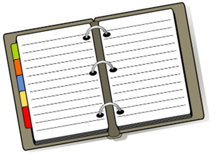

Стильный хороший мальчик
Ниже представлен список моих оценок по различным предметам. Данный список не обновляется автоматически

Скоро мой дневник пополнится новыми предметами и оценками!
Мы использовали тег <div>, чтобы сгруппировать два параграфа и добавить фон к тексту, а для того, чтобы изменить цвет этого слова мы использовали тег <span>. Обратите внимание, что тег <div> является блочным элементом, до и после него добавляется разрыв строки.
Делим пустыню на ряд элементарных участков, размер которых совпадает с габаритными размерами льва, но при этом меньше размера клетки. Далее простым перебором определяем участок, в котором находится лев, что автоматически приводит к его поимке.
Делим пустыню на две половины. В одной части — лев, в другой его нет. Берем ту половину, в которой находится лев, и снова делим её пополам. Так повторяем до тех пор, пока лев не окажется пойман.
Обычный текст, жирный, курсив, полужирный, акцент курсивом.
Абзац с фрагментом красного текста внутри.
По центру
По левому краю
По правому краю
По ширине — этот абзац длинный, чтобы растягивание было видно: браузер раздвигает слова так, чтобы левый и правый края строки выровнены.

Ежи защищены от внешней агрессии колючим панцирем, который спасает их от тех, кто хочет поживиться вкусным и нежным мясом ежа. Но не стоит считать это животное и совершенно безобидным, всё-таки это хищник. Да, он не питается волками и лисами, но только потому, что уступает им в размерах. А вот закусить червячком или даже змейкой ему вполне под силу.
Стильный хороший мальчик